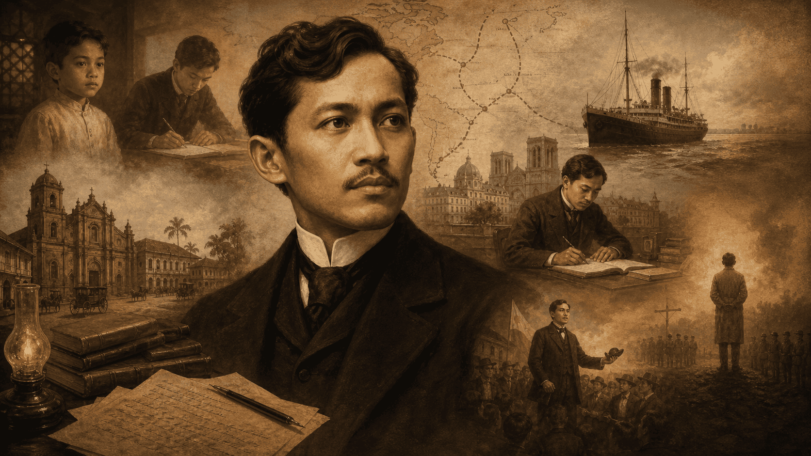
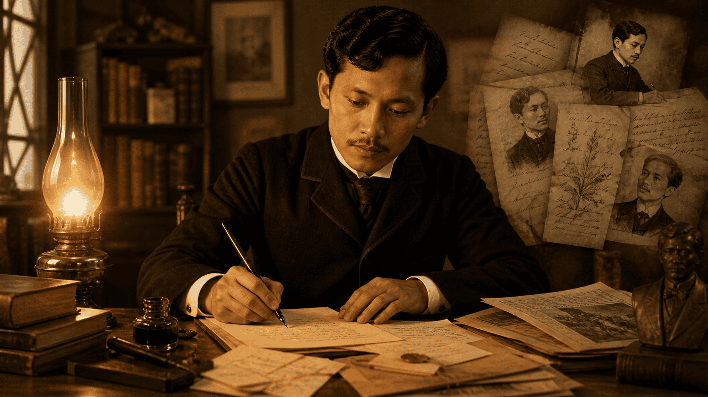
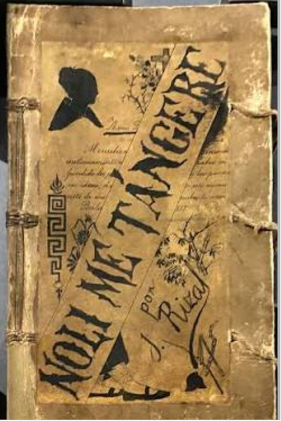
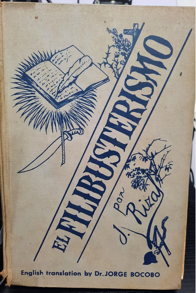

1861-1896

Awakening a Nation

Touch Me Not
Published in Berlin, this groundbreaking novel boldly exposed the inequities of the Spanish Catholic friars and the ruling colonial government. It follows the story of Crisostomo Ibarra, a young idealistic Filipino who returns from Europe to seek peaceful reforms, only to face systemic corruption and tragic personal ruin. It served as the initial spark for the Philippine revolution.

The Reign of Greed
Published in Ghent, this darker, more radical sequel shifts the narrative from peaceful reform to the prospect of violent revolution. It follows Simoun, a wealthy and mysterious jeweler, a disguised Ibarra, who plots to violently overthrow the colonial government. Rizal dedicated this profound work of political fiction to the martyred GomBurZa priests.
"To foretell the destiny of a nation, it is necessary to open the book that tells of her past."José Rizal